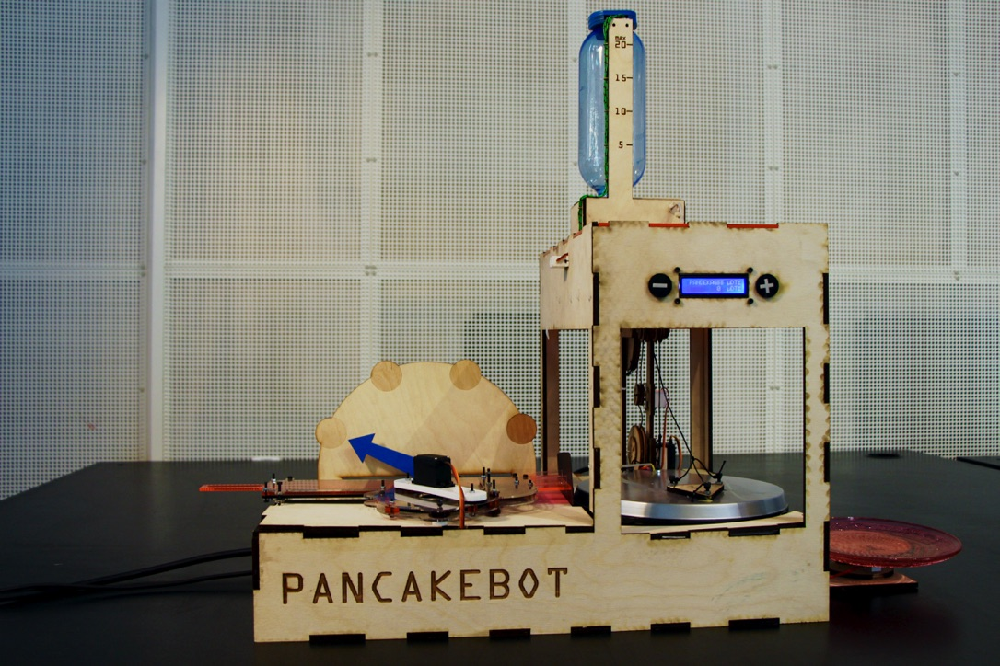
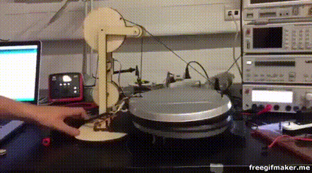

Pancakebot: An over-the-top fully automated crêpe maker.
Sometimes, the simplest problems requires the most over-engineered, complicated and ridicoulus solutions. Pancakebot is one of those. It all started as a mechatronics project on DTU with a couple of fellow students (Frederik, Emilie, Sofie, Lasse and Ditte for credits). We were all incredibly dissatisfied with the time-consuming and boring process of baking crêpes, and decided to do something radical about it. After 3 intense weeks of staying up late, coding, cutting and gluing, we saw the fruits of our hard work: Pancakebot: 
Actuator frenzy!
Pancakebot contains no less than 10 actuators and sensors, making this project oversize, overkill and almost impossible to finish in 3 weeks. Heres a complete list:- An ultrasonic distance sensor for measuring the amount of pancake dough left in the container
- A 230V relay for toggling the pancake heater
- A peristaltic pump for dispensing dough for each pancake
- A crane for opening and closing the pancake heater lid (yes you read that right, a custom built crane with two servos)
- A linear actuator for pushing of the pancake when it's done (not even that ridiculous, our initial idea was a fan for blowing it off)
- A screen with buttons to order any amount of pancakes, with feedback if one of the sensors screws up.
- A physical arrow with numbers, indicating the progress of pancake cooking.
- A weight measuring if the pancake successfully landed on the serving plate.
- A servo rotating the measurement cup for dough, tilting the dough into the heater.
